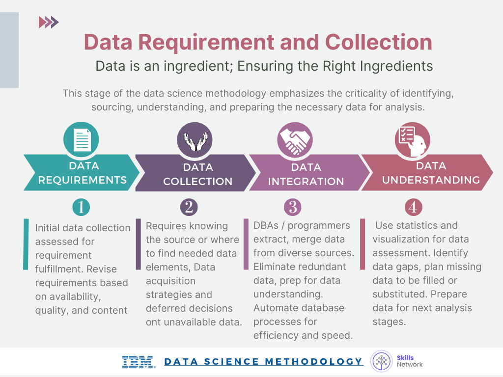
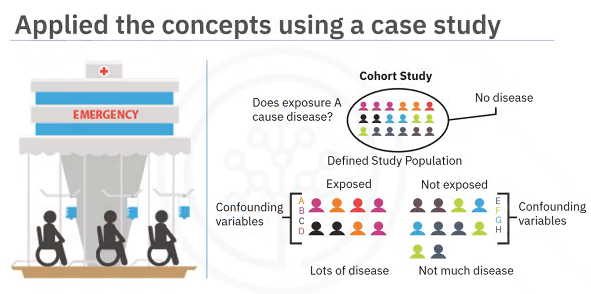
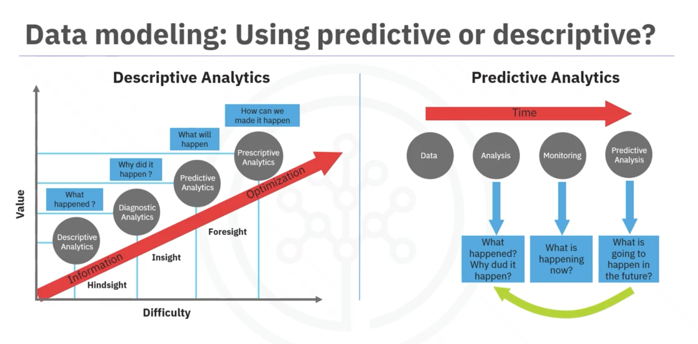

Guía de Estudio Completa
Metodologías de
Ciencia de Datos
Un proceso iterativo y estructurado para resolver problemas de negocio con datos. Certificado Profesional IBM.
Contenido del Curso
Las 10 Etapas
Caso hospital completo.
Enfoque Analítico
5 tipos de enfoque.
Árbol / Curva ROC
Errores y costos.
Churn / Threshold
Ratio X:1.
CRISP-DM
6 vs 10 etapas.
Storytelling
Técnica ¿Y qué?
Glosario y Cierre
Fórmula del éxito.
Registro de Estudios
Progreso y racha.
Capítulo 1
Las 10 Etapas de la Metodología DS
Cada etapa responde una pregunta clave y alimenta a la siguiente.
Caso de Estudio
Hospital: Predicción de Readmisión por Insuficiencia Cardíaca
Predecir qué pacientes con insuficiencia cardíaca serán readmitidos, para intervenir antes.
Problema
Reducir readmisiones hospitalarias innecesarias y costosas.
Enfoque
Clasificación con árbol de decisión. "¿SÍ o NO se readmitirá?"
¿Por qué árbol?
Accesible para clínicos. Reglas claras y transparentes.

IBM Data Science Methodology
Las 10 Etapas
El proceso NO es lineal — es iterativo
En cualquier etapa puedes volver atrás. Esto es normal y esperado.
Flight to Risk Model
¿Qué es?
Modelo que se enfoca automáticamente en pacientes de mayor riesgo. Filtra la población y pone en el radar solo a quienes necesitan intervención urgente.
Ejemplo
De 500 pacientes, identifica los 47 con mayor probabilidad de readmisión. El equipo se enfoca solo en ellos.
Analogía
Salvavidas con binoculares inteligentes que resaltan solo a quienes muestran señales de peligro.
"Entre más conozcas, más querrás conocer." — John Rollins

Examen — Capítulo 1
Las 10 etapas.
Capítulo 2
Enfoque Analítico
El tipo de pregunta determina la herramienta.
Descriptivo
"¿Cuál es la situación actual?"
Técnicas: agregación, minería, dashboards.
Ej: Resumen de producción diaria, reportes de defectos.
Diagnóstico
"¿Por qué ocurrió?"
Técnicas: correlaciones, desglose, patrones.
Ej: ¿Por qué bajaron ventas? ¿Por qué más defectos?
Predictivo
"¿Qué es probable que ocurra?"
Técnicas: regresión, series de tiempo, ML.
Ej: Forecast de demanda, predicción de readmisión.
Prescriptivo
"¿Qué debemos hacer?"
Técnicas: optimización, simulación, escenarios.
Ej: ¿Cuántas piezas producir? ¿Qué precio maximiza margen?
Clasificación
"¿A qué categoría pertenece?"
Técnicas: regresión logística, árbol, SVM, redes neuronales.
Ej: ¿Defectuosa? ¿Spam? ¿Se readmitirá?

Predictivo vs Descriptivo
Modelo Predictivo
Genera probabilidad de resultado futuro. Necesita datos históricos.
Modelo Descriptivo
Muestra patrones y relaciones. Clustering, reglas de asociación, segmentación.
Examen — Capítulo 2
Capítulo 3
Árbol de Decisión:
Errores vs Costos y Curva ROC
La precisión general no lo es todo.
Error Tipo I
Falso Positivo
Dice SÍ · es NOAlarma sin fuego. Molestas a todos, pero nadie muere.
El modelo predice readmisión pero el paciente estaba bien.
Error Tipo II
Falso Negativo
Dice NO · es SÍHay fuego pero la alarma no suena. Catástrofe.
El modelo dice que no se readmitirá pero sí regresa.
Comparación de Modelos — Caso Hospital
| Modelo | Costo | Sensibilidad | Falsos + | Precisión |
|---|---|---|---|---|
| Modelo 1 | 1:1 | 45% | 3% | 85% |
| Modelo 2 | 1.5:1 | 60% | 8% | — |
| Modelo 3 GANADOR | 4:1 | 68% | 15% | 81% |
| Modelo 4 | 9:1 | 97% | 65% | 49% |
Curva ROC y AUC
Eje Y = True Positive Rate (lo más alto posible)
Eje X = False Positive Rate (lo más bajo posible)
Modelo 3: 0.68 - 0.15 = 0.53 separación máxima.
3 Preguntas Obligatorias
¿Cuál error duele más?
¿Cuánto más? Cuantifícalo.
Ese es tu costo relativo. Configúralo antes de entrenar.
Examen — Capítulo 3
Capítulo 4
Churn, Threshold y Ratio X:1
Los 3 conceptos más importantes en clasificación de negocio.
Churn
Clientes que abandonan el servicio.
Radar que avisa con 1 mes de anticipación.
- ● 3 semanas sin abrir la app
- ● Busca "cómo cancelar"
- ● Uso baja de 2h a 10min
- ● Sin usar premium en 30 días
Threshold
Punto de corte que TÚ defines (0-1).
Ratio X:1
¿Cuántas veces duele más el error grave?
Perder cliente: $300
Descuento: $10
Ratio = 30:1
Más costoso el falso negativo → más bajo el threshold.
Conexión de los 3 conceptos
Modelo genera probabilidades 0-1
Calculas ratio según costo de errores
Ratio define threshold óptimo
Examen — Capítulo 4
Capítulo 5
CRISP-DM
Cross-Industry Standard Process for Data Mining.
6 Etapas vs. 10 de Rollins
3 Principios
Iterativo
Puedes volver a cualquier etapa.
Comunicación constante
Con el equipo durante todo el proceso.
Termina por acuerdo
Cuando responde las preguntas del negocio.
Examen — Capítulo 5
Capítulo 6
Data Storytelling
La última milla de los datos.
"Si no puedes comunicar tu análisis de forma clara y convincente, es para nada." — Estudio IBM
Estructura
1. Contexto
Establece la situación antes de números.
Ej: "3 meses con defectos crecientes en línea 3."
2. Conflicto
Los datos son evidencia, no protagonistas.
Ej: "80% de defectos en primeras 2h del turno nocturno."
3. Resolución
Debe terminar en acción concreta.
Ej: "Ajustar máquina 7 = -60% defectos = $2,300/semana."
Técnica "¿Y qué?"
Niveles de madurez
Examen — Capítulo 6
Capítulo 7
Glosario y Cierre
Árbol de decisión
Preguntas encadenadas para clasificar datos.
Training set
Datos históricos con resultados conocidos.
Feature engineering
Crear variables desde datos brutos.
Estadísticas descriptivas
Media, mediana, mín, máx, desviación estándar.
Correlación por pares
Relación entre dos variables.
Estudio de cohorte
Grupo con características comunes seguido en el tiempo.
Variable / Feature
Columna del dataset usada por el modelo.
Valores faltantes
Eliminar, imputar, o marcar como desconocido.
La Fórmula del Éxito
Herramientas correctas
+ Momento correcto
+ Orden correcto
+ Problema correcto
— John Rollins
Examen Final
Herramienta
Registro de Estudios
Registrar hoy
Historial
No hay registros aún.